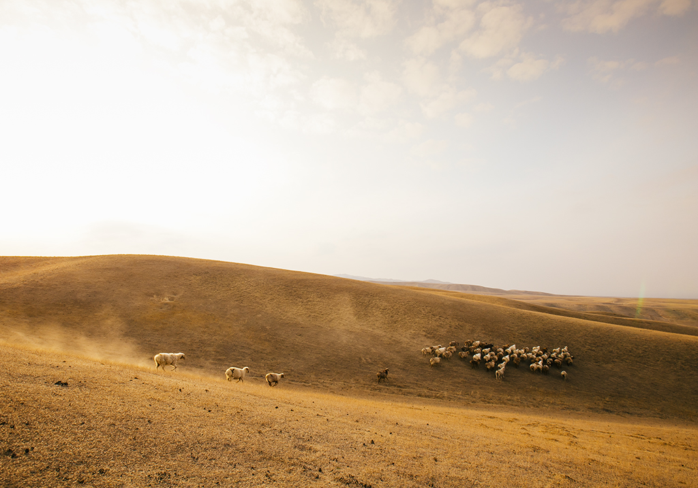

很久前想建立一个美食摄影工作室，于是便起了一个名字：YummyFoto。我相信好的照片不止是"拍得好看"，它应该有温度、有节奏，能让人在翻看时重新回到那个瞬间。

摄影对我来说，是一种安静的表达方式。它不像文字需要层层解释，也不像音乐需要线性流动 —— 它只需要一个决定性的瞬间，让时间在感光元件上定格。从第一次按下快门到现在，我始终被这种力量所吸引。
我擅长于美食摄影、静物产品、人文纪实与风光摄影。从前期沟通、现场拍摄到后期精修，每一步都由我亲手完成。无论你是需要一套能打动客户的美食作品图，一张沉稳的产品静物，还是一次安静的街头纪实记录 ， 你都可以与我联系。